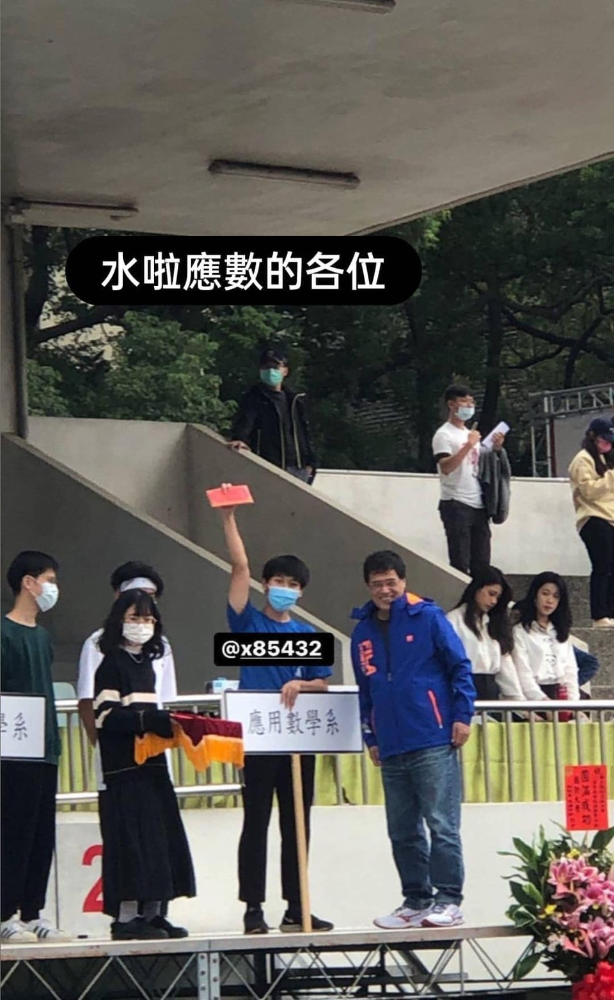
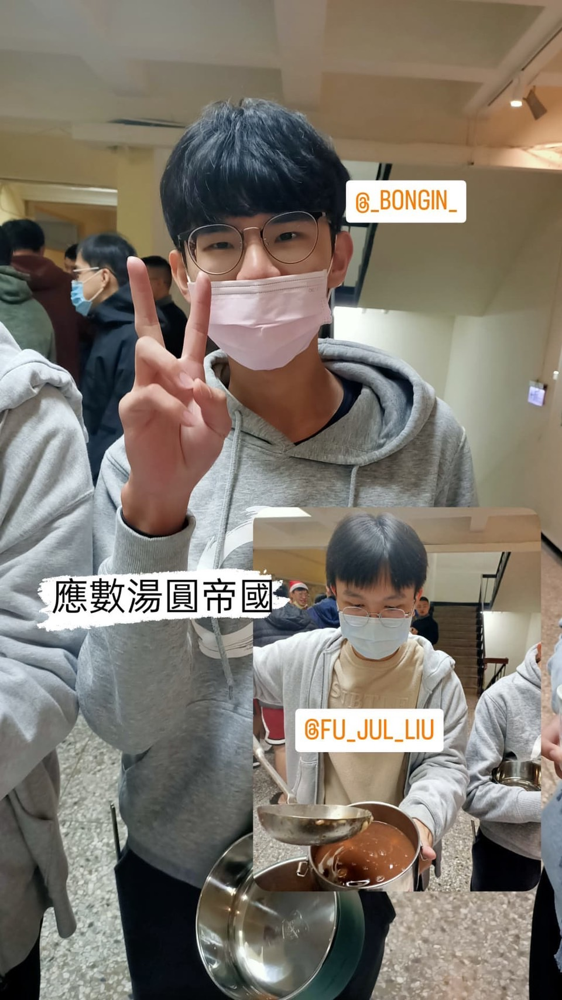
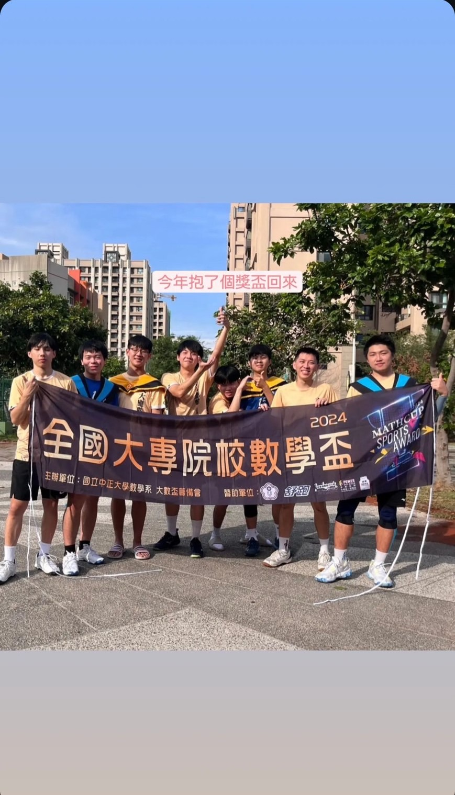
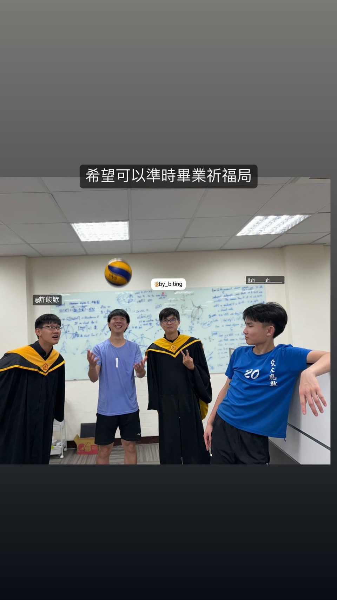

As the planner, won the "Best Surprise Award" at the sports day entrance.
Unfortunately, there is no video left.

The Tangyuan gathering held by the Department of Applied Mathematics every Winter Solstice. Both sweet and savory tangyuan are available, and everyone takes time to chat and eat.

2024 Big Math Cup, participated as vice-captain, mainly playing defense, but unfortunately faced the runner-up and third-place teams in this round.

The second-year master's seniors have graduated. I took a picture with them. Now, as the captain of the volleyball team, I often consult with them.